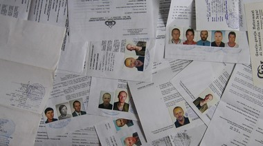

Navigation
- Carstensz Pyramid
- PROGRAMS & SCHEDULE
- Our most imporant expeditions
- LAST CARSTENSZ REFERENCIES
- History of climbing the summit
- Legendary Carstensz climbers
- Seven Summits
- 7 Summits - History
- 7 faces of Carstensz Pyramid
- Photos from climbing
- The nature and flora
- Trekking around Carstensz
- Climbing routes to the summit
- 7summits Carstensz best Base camp
- The Tribes and People
- Climate and weather
Climbing permits
- How to go
- The Highest Mountain of Papua New Guinea
- Why to go with us
- Malaria
- Wrote about us
- References
- Links
- Contact us
- Download


Carstensz Pyramid (Puncak Jaya) – Climbing Permits
For climbing the Carstensz Pyramid, you need many permits from Jakarta, the capital of Indonesia, and several other permits from Jayapura, the capital of Papua province of Indonesia. Getting any of the permits is very tough. It is necessary to get a permit from BAIS – Indonesian secret police (similar to the U.S. FBI or Russian KGB), from the army, from the ministry of foreign affairs, from the ministry of tourism, from federal police, and many more. From similar authorities, it is necessary to get provincial permits in Jayapura. These permits are issued based on permits from Jakarta. Without a permit from Jakarta, you won't get a permit from Jayapura. On the other hand, authorities in Jayapura are not obliged to issue you a permit even if you already have one from Jakarta.

Carstensz Pyramid Permits. Do you know wich one us right? Any one, or no one? Mabe one? Photo©JahodaPetr.com
It works according to the saying: The less important job an officer has, the more red tape he requires. To clear off all the permits takes a long time. You need a „stack“ of photos and a „suitcase“ of money. If you succeed in obtaining a permit, you are still left to hope that it is the right one. If you do recieve the wrong permit, you will be sure to find out at the check point.
It is not possible to climb the Carstensz without the correct permits. Permits are checked literally everywhere. It sometimes happens, that armed soldiers dressed in camouflage uniforms, arrive to the Base Camp via the Free Port of Indonesia, to check the permits. The soldiers won't let you leave from any airport situated near the Carstensz Pyramid, if you don't have the „right“ permit.
Don't try to falsify the permit! The army and the police verify the permits at the check points by radio. Sometimes it can take even 24 hours for a reply from Jayapura or Jakarta. They check names, birth dates, passport numbers, and the numbers of the respective permits!
We saw a very unfortunate situation of one international expedition in December 2005. This was about the time when the Carstensz was officially reopened after a long period of closure. Eight climbers – seven Belgians, and one Greek, paid 6500 USD to a local agency per person – 52000 USD altogether and they did not reach the Base Camp. They asked us for help, but it was too late. They did not have the right permit. After a month spent on Papua they had to return home without even seeing the Carstensz. As far as I know they did not get anything back from the agency?
You need to be very experienced to be able to get the „right“ permit. We recommend you to have an agency arrange your permits, and it is advisable to cross-check that agency in advance. You have to be extremely careful when choosing an agency, a travel agency, or a guide. Bear in mind that you will be asked to pay in advance in any case.
Papua – breaking news
An international expedition (Czech-Slovak) got into deep trouble. In January 2006 they tried to save money for permits from Jakarta. The expedition tried to reach the Carstensz Pyramid without the permits. It was their fifth expedition to Papua. Hence, it can't be said that it was their lack of experience that led them to making this grave error. I know all of the expedition members personally. They were stopped in the same place as a Greek-Polish expedition several months earlier. Unfortunately, they were not even able to reach the Base Camp. On Papua, you can't make it without the necessary permits and enough money.
According to our information, the expedition from Germany and Korea ran into the same trouble at the beginning of 2006. They were also not able to reach the Base Camp. Each summer, about five expeditions is doomed to the same fate. It is apparent from their programs and prices which cannot cover organizing an expedition including the right permits.
Do not learn from your mistakes, learn from the mistakes of others
During the course of the year 2006, many expeditions set out for the Carstensz Pyramid, but only few reached the mountain. Even helicopters did not save two expeditions from failure. We recieved this piece of information, from one of the members of our March 2007 expedition. He tried to reach Carstensz twice in 2006. Each attempt with a different travel agency. In both cases, the organizers did not make proper arrangements for the helicopters and the expedition failed. Only the third attempt he undertook – Carstensz Expedition with AbsolutAdventure – succeeded.
In the beginning of 2007, a fellow climbers and an acquaintace of Petr Jahoda, our Carstensz Guide, tried for the third time to reach the Carstensz Pyramid – again, unsuccessfuly. He paid three times for the trip, each time to a different agency. He spent two or three months of his life on Papua, but have not yet even seen a glimpse of the Carstensz Pyramid. We are very sorry for this, because Petr Jahoda had personally invited him to take part on our successful March expedition, which reached the top of the mountain on 31 March 2007. He hurried to much…
Trust only agencies with proven success record
It is not unusual that a travel agency which offers expeditions to the Carstensz Pyramid has never been there. The photos some travel agencies have on their websites come from different sources, sometimes they have been even „stolen“. One German travel agency has a „stolen“ photo of the mountain at Larson Lake. We found similar nonsense information and stolen pictures on another Spanish website. These expeditions can't end in any other way than failure.
Every year several travel agencies organize trips to the Carstensz Pyramid. There are many of them which prepare for a Carstensz Pyramid expedition, and have been „selling“ it for a long time, although they have never been there. Travel agencies, which actually carry out a Carstensz expedition, are significantly fewer. There is even a smaller number of those, who actually get their clients to the Base Camp and subsequently to the summit of the Carstensz Pyramid. This can be achieved only with travel agencies, which have a lot of experience in Papua. Unfortunately, this is still about having contacts, acquaintances, and about a toughly earned trust and friendship of numerous „important“ officers. This can't be achieved in two or three years!
Cheap price offen implies no permit
Consider it yourself whether it is worth trying to go „cheaper“, without a permit. Perhaps you'll reach the conclusion that it is wiser to entrust the organization of your expedition to the care of professionals with a lot of experience in this area. A month on Papua can be beautiful, it would be a pity to spend it in airplanes trying to find your way to the Base Camp, only to return in a year or two to Papua with the same goal. With Carstensz it is especially true that a more expensive way can be much cheaper in the end…
Don't trust cheap travel agencies. If you tried to climb Mt. Everest, you also wouldn't put your faith into a travel agency which offers expedition for 6000 dollars. It is the same way with Carstensz Pyramid. This mountain has a price at which it can be done, and a price at which it is simply not possible anymore. You need to get about seven permits for climbing Carstensz. How can any of you say he or she can distinguish which is genuine one, the most important one, and the right one? I saw many permits for Carstensz, but there is only one you can use to reach it.
Require guarantees
AbsolutAdventure offers you European guarantees. If, coincidently, it would happen that the Base Camp wasn't reached because of something that we did wrong, we will give you a substantial part of your money back. We can guarantee this because we are sure we can reach Carstensz Pyramid. This will not be the first time of our going there!